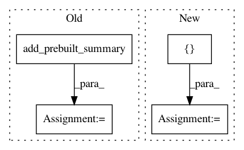

d7a7dd6fe7106f6501e9995a92153f65238bbb47,tensorflow_transform/analyzers.py,QuantilesCombiner,_make_get_buckets_callable,#QuantilesCombiner#Any#Any#,1295
Before Change
def _make_get_buckets_callable(self, qaccumulator, stamp_token):
final_summary = tf.compat.v1.placeholder(dtype=tf.string, shape=[])
add_final_summary_op = qaccumulator.add_prebuilt_summary(
stamp_token=stamp_token, summary=final_summary)
// Create ops to flush the accumulator and return approximate boundaries.
with tf.control_dependencies([add_final_summary_op]):
flush_op = qaccumulator.flush(
After Change
return buckets
final_summary = tf.compat.v1.placeholder(dtype=tf.string,
shape=[self._num_features])
add_final_summary_op = [
qaccumulators[summary_ix].add_prebuilt_summary(
stamp_token=stamp_token, summary=final_summary[summary_ix])
for summary_ix in range(self._num_features)
]
// Create ops to flush the accumulator and return approximate boundaries.
with tf.control_dependencies(add_final_summary_op):
flush_op = [qacc.flush(stamp_token=stamp_token,
In pattern: SUPERPATTERN
Frequency: 3
Non-data size: 4
Instances
Project Name: tensorflow/transform
Commit Name: d7a7dd6fe7106f6501e9995a92153f65238bbb47
Time: 2019-06-21
Author: tf-transform-dev@google.com
File Name: tensorflow_transform/analyzers.py
Class Name: QuantilesCombiner
Method Name: _make_get_buckets_callable
Project Name: tensorflow/transform
Commit Name: cf1cf0f9efbbe378af96c81a4edd82ab294810d9
Time: 2019-08-12
Author: tf-transform-dev@google.com
File Name: tensorflow_transform/analyzers.py
Class Name: _QuantilesGraphState
Method Name: _make_get_buckets_callable
Project Name: tensorflow/transform
Commit Name: d7a7dd6fe7106f6501e9995a92153f65238bbb47
Time: 2019-06-21
Author: tf-transform-dev@google.com
File Name: tensorflow_transform/analyzers.py
Class Name: QuantilesCombiner
Method Name: _make_add_summary_callable